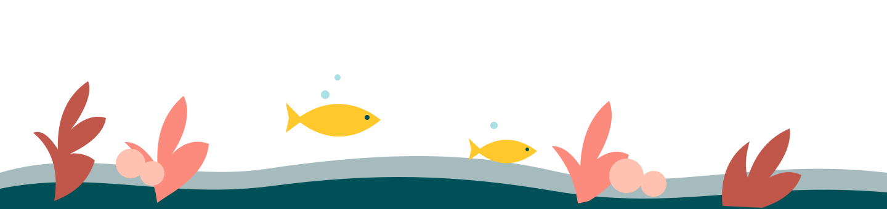
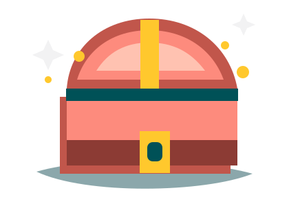
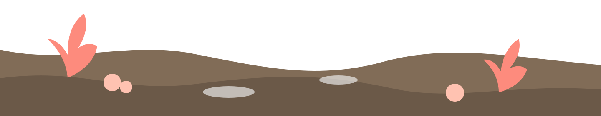

עולים על הציוד
לאורך שנת ההוראה הראשונה
מתווה הכשרת מרצות ומרצים חדשים
נדרש להשלמה: טקסט קצר, כ־80–120 מילים, שיסביר את מתווה הליווי והמפגשים בשנת ההוראה הראשונה ואת הצעד הבא הנדרש מהמרצה.
רגע לפני שקופצים למים ונכנסים לכיתה, ריכזנו עבורכם את כל המידע, הכלים והמשאבים שיעזרו לכם לפתוח את הסמסטר בצורה הטובה ביותר.
המטרה: לחסוך לכם זמן, לעשות סדר בראש ולאפשר לכם להגיע לשיעור הראשון בביטחון מלא.
לאורך שנת ההוראה הראשונה
מתכוננים לפני שצוללים
סמנו את מה שכבר השלמתם. ההתקדמות נשמרת במכשיר הזה בלבד, ואפשר לפתוח מידע נוסף לצד כל משימה.
0 מתוך 15 משימות הושלמו
עולים על הציוד
מסדרים את הסביבה
הרגע שלפני

שונית של רעיונות
ריכזנו עבורכם טעימה מהכלים והמדריכים הכי פרקטיים לתחילת הדרך — מומלץ להציץ, לשמור במועדפים ולשלוף אותם בדיוק כשצריך.

תוכן שיסייע לבנות פתיחה ברורה ומזמינה, להציג את מבנה הקורס ולנסח כללים משותפים.
נדרשים תיאור סופי וקישור לתוכן.מדריך צעד־אחר־צעד לבחינת מטלות, תוצרים ומדיניות הקורס בעידן הבינה המלאכותית.
נדרש הקישור הישיר ב־TeachHIT.כלים מעשיים לשדרוג ההוראה בעזרת כלי ה־AI של Google.
נדרש הקישור הישיר ב־TeachHIT.תוכן מוכן להכשרת מרצים וסטודנטים לעבודה מושכלת עם כלי בינה מלאכותית.
נדרשים תיאור סופי וקישור לתוכן.גם בחושך יש כיוון
לפעמים הדרך קצת פחות ברורה, וזה בסדר גמור. ריכזנו כאן כתובות שיעזרו לפתור כל בעיה — מסיוע טכני ומנהלי ועד ייעוץ פדגוגי. פתחו את הסיטואציה המתאימה כדי לראות למי כדאי לפנות.
הגעתם לקרקע בטוחה
המרכז לקידום ההוראה הוא גוף מקצועי התומך בסגל האקדמי ומסייע בשמירה ובקידום איכות ההוראה, תוך דגש על תפיסות חדשניות ושילוב כלים טכנולוגיים המקדמים למידה משמעותית ועדכנית.
אנו מציעים מעטפת ליווי פדגוגית הכוללת:
נשמע מעניין? למידע נוסף, לחשיבה משותפת ולקבלת ליווי אישי — פנו אלינו, ונשמח לסייע.
טופס תיאום פגישה יתווסףיש להטמיע כאן סרטון YouTube של המרכז ביחס 16:9, עם כותרת נגישה, כתוביות ותמלול.
